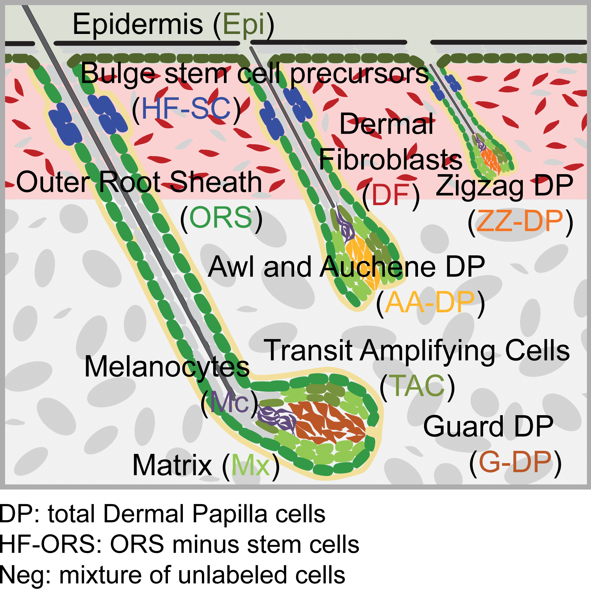

Hair-GEL
searchable
G
ene
E
xpression
L
ibrary
for hair follicles
Rendl Lab
,
Ma'ayan Lab
E14.5 embryonic mouse skin
P5 postnatal mouse skin
E14.5 embryonic mouse skin
Gene Symbol:
Search
Search for gene of interest by entering
official symbol
Examples:
Fgf20
,
Ovol1
,
Mitf
,
Sox2
,
Dpt
,
Gfra1
* signature genes
Save image
FPKMs:
download signature gene lists
Access the dataset from GEO
P5 postnatal mouse skin
Gene Symbol:
Search
Search for gene of interest by entering
official symbol
Examples:
Krt1
,
Shh
,
Mitf
,
Hhip
,
Nfatc1
,
Sox2
* signature genes
Save image

FPKMs:
download signature gene lists
Access the dataset from GEO